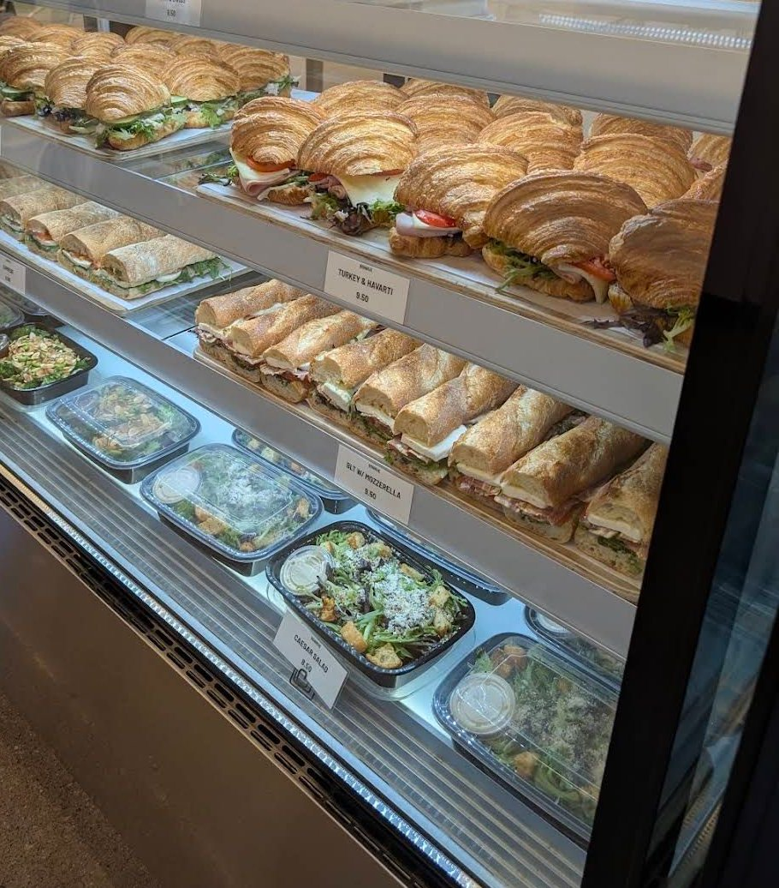

Bonrue Bakery
Bakery & Coffee (formerly Farmstead)
11 S Main St, Hurricane, UT 84737
Rating: 5/5
If you’re on your way to Zion National Park, Bonrue is a must-stop! The pastry case alone is worth the visit — everything looks fresh, golden, and perfectly made. The chocolate croissant caught my eye immediately; it’s beautifully layered with rich, chocolate stripes and looks as good as it tastes. They also have tempting options like Boston cream donuts and other gorgeous pastries that make it hard to choose just one.
Pair your pastry with a coffee, and you’ve got the perfect start to your day or a great treat after a hike. The atmosphere is inviting, and the quality is top-notch. I’d definitely recommend stopping here for a coffee or fresh pastry if you’re in the area.
Chocolate Croissant · Coffee
About the place
Bonrue started as Farmstead, a bakery that opened in St. George in 2021 and later expanded to Hurricane. It was renamed Bonrue in 2025 after a trademark issue and was acquired by Savory Fund the same year, with a Springdale shop planned near Zion. It specializes in European-style pastries: croissants, kouign-amann, donuts, cakes and croissant sandwiches, plus coffee. The Hurricane shop is open every day, 6 AM to 4 PM.
What other diners say: Reviewers on Yelp (via Apple Maps) and Birdeye often praise the croissants, the variety in the pastry case and the coffee. Many note it gets busy and is on the pricier side, but say the quality is worth it.
Sources: Bonrue's website, KSL.com, Utah Business, Apple Maps (Yelp) and Birdeye. Summaries are paraphrased, not quotes.




Comments
Sign in with GitHub to leave a comment or reaction.